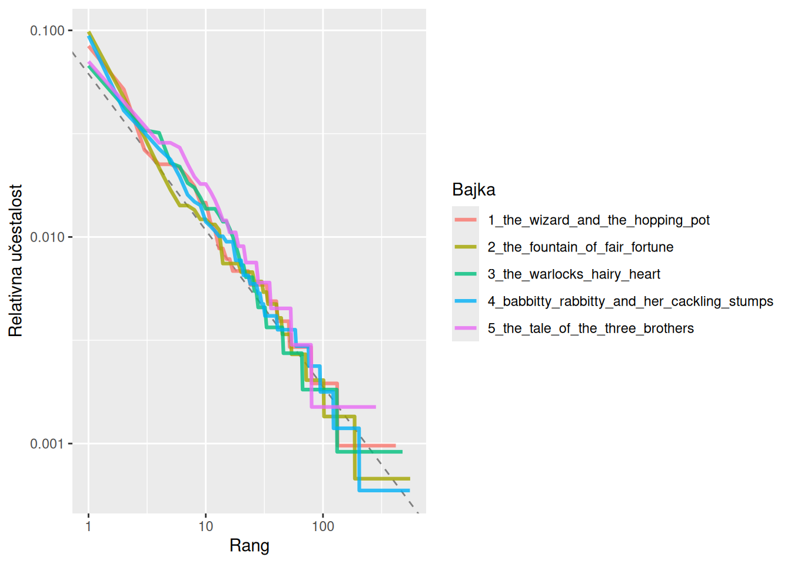
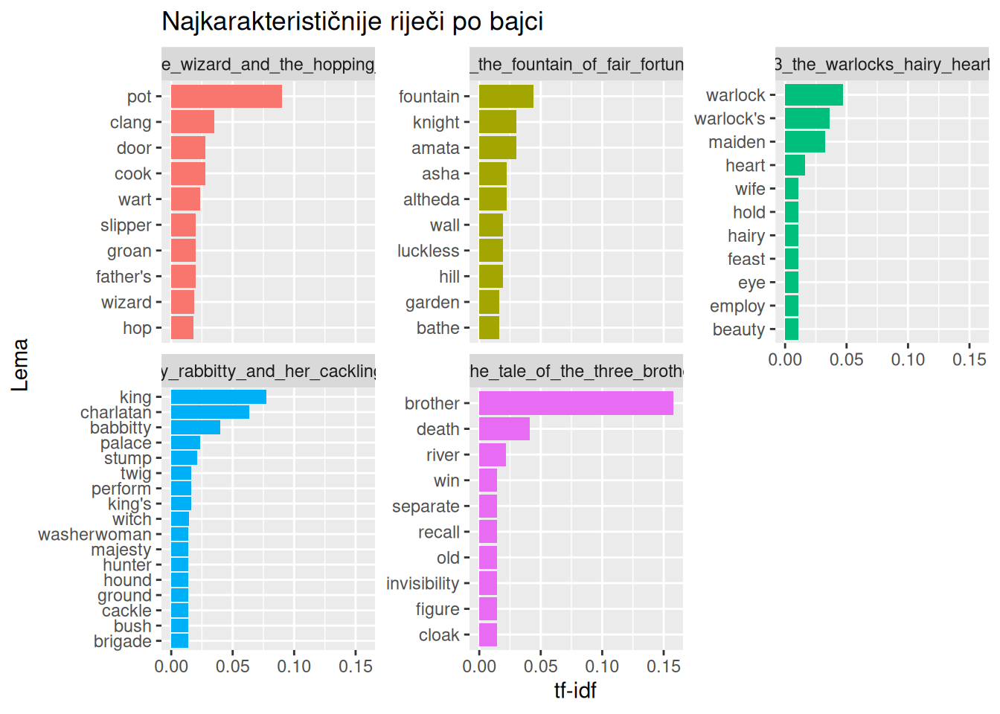

Riječi koje se u tekstu pojavljuju najčešće rijetko su one koje o njemu govore najviše. Učestalost riječi u jeziku podliježe pravilnosti poznatoj kao Zipfov zakon, a prema kojem se malobrojne riječi pojavljuju iznimno često, a velika većina tek rijetko. Zato samo brojanje riječi ne govori koje su riječi za neki tekst doista važne. Odgovor na to pitanje daje mjera tf-idf koja učestalost riječi u jednom tekstu uspoređuje s njezinom prisutnošću u ostalim tekstovima i tako izdvaja riječi po kojima se pojedini tekst razlikuje od ostalih.
U prethodnom smo poglavlju učestalost riječi analizirali brojanjem, odnosno računanjem koliko se puta pojedina riječ pojavljuje u tekstu i koliki je njezin udio u ukupnom broju riječi. Takva analiza govori koje su riječi česte, ali ne i koje su važne. Veći broj pojavljivanja ne znači nužno da je riječ važnija za sadržaj teksta. U ovom ćemo poglavlju najprije pogledati kako je učestalost riječi u tekstu raspoređena, a zatim upoznati mjeru koja pokušava izdvojiti riječi koje su za pojedini tekst doista karakteristične.
9.1 Zipfov zakon
Raspodjela učestalosti riječi u jeziku slijedi pravilnost poznatu kao Zipfov zakon, nazvan prema američkom lingvistu Georgeu Zipfu. Prema tom zakonu, učestalost riječi obrnuto je proporcionalna njezinu rangu, odnosno mjestu na popisu riječi poredanih od najčešće prema najrjeđoj. Drugim riječima, druga najčešća riječ pojavljuje se otprilike upola rjeđe od najčešće, treća otprilike trećinu toliko često i tako dalje. Matematički se to može zapisati ovako:
Primjerice, ako se u nekom velikom tekstu najčešća riječ pojavljuje 10000 puta, druga najčešća pojavit će se otprilike 5000 puta, a treća otprilike 3333 puta. Posljedica je da malobrojne riječi, uglavnom zaustavne riječi poput the, and ili of, čine velik dio svakog teksta, dok se velika većina riječi pojavljuje tek nekoliko puta ili samo jednom.
Zipfov zakon možemo provjeriti na bajkama barda Beedlea s nekoliko funkcija iz paketa dplyr. Budući da nas zanima raspodjela učestalosti svih riječi u tekstu, koristimo tokenizirani tekst u izvornom obliku, sa zaustavnim riječima (tToBtB_word_tokens). Postupak je sljedeći:
Funkcijom count() brojimo koliko se puta svaka riječ pojavljuje u svakoj bajci. Argument sort = TRUE slaže riječi od najčešće prema najrjeđoj.
Podatke grupiramo prema bajci kako bi se sljedeći izračuni provodili zasebno za svaku bajku.
Funkcijom mutate() stvaramo tri nova stupca:
rank - redni broj riječi na popisu poredanom prema učestalosti koji dobivamo funkcijom row_number();
total - ukupan broj riječi u bajci i
term_frequency - relativnu učestalost riječi, odnosno njezin udio u ukupnom broju riječi u bajci.
# Rang i relativna učestalost riječi u svakoj bajcitToBtB_freq_by_rank <- tToBtB_word_tokens |>count(fairy_tale, word, sort =TRUE) |>group_by(fairy_tale) |>mutate(# Rang riječi unutar bajkerank =row_number(),# Ukupan broj riječi u bajcitotal =sum(n),# Relativna učestalost riječiterm_frequency = n / total ) |>ungroup()# PregledtToBtB_freq_by_rank
# A tibble: 2,283 × 6
fairy_tale word n rank total term_frequency
<chr> <chr> <int> <int> <int> <dbl>
1 4_babbitty_rabbitty_and_her_cackling_… the 159 1 1687 0.0943
2 2_the_fountain_of_fair_fortune the 146 1 1479 0.0987
3 1_the_wizard_and_the_hopping_pot the 86 1 1023 0.0841
4 3_the_warlocks_hairy_heart the 74 1 1096 0.0675
5 2_the_fountain_of_fair_fortune and 70 2 1479 0.0473
6 4_babbitty_rabbitty_and_her_cackling_… and 69 2 1687 0.0409
7 4_babbitty_rabbitty_and_her_cackling_… of 54 3 1687 0.0320
8 1_the_wizard_and_the_hopping_pot and 53 2 1023 0.0518
9 3_the_warlocks_hairy_heart and 47 2 1096 0.0429
10 5_the_tale_of_the_three_brothers the 47 1 665 0.0707
# ℹ 2,273 more rows
Stupac rank pokazuje mjesto svake riječi na popisu riječi u njezinoj bajci, poredanom od najčešće prema najrjeđoj.
Zipfov zakon najlakše je provjeriti na jednoj bajci, primjerice na bajci The Fountain of Fair Fortune.
# Rang i relativna učestalost riječi u bajci The Fountain of Fair FortunetToBtB_freq_by_rank |>filter(fairy_tale =="2_the_fountain_of_fair_fortune")
# A tibble: 554 × 6
fairy_tale word n rank total term_frequency
<chr> <chr> <int> <int> <int> <dbl>
1 2_the_fountain_of_fair_fortune the 146 1 1479 0.0987
2 2_the_fountain_of_fair_fortune and 70 2 1479 0.0473
3 2_the_fountain_of_fair_fortune of 45 3 1479 0.0304
4 2_the_fountain_of_fair_fortune to 32 4 1479 0.0216
5 2_the_fountain_of_fair_fortune her 25 5 1479 0.0169
6 2_the_fountain_of_fair_fortune in 21 6 1479 0.0142
7 2_the_fountain_of_fair_fortune was 21 7 1479 0.0142
8 2_the_fountain_of_fair_fortune they 20 8 1479 0.0135
9 2_the_fountain_of_fair_fortune a 18 9 1479 0.0122
10 2_the_fountain_of_fair_fortune she 18 10 1479 0.0122
# ℹ 544 more rows
Bajka The Fountain of Fair Fortune ima ukupno 1479 riječi, od čega 554 različite. Najčešća riječ je the koja se pojavljuje 146 puta i čini 9,87 % svih riječi u bajci, pa je otprilike svaka deseta riječ the. Druga najčešća riječ, and, pojavljuje se 70 puta, a treća, of, 45 puta. Prema Zipfovu zakonu, riječ na rangu r trebala bi se pojavljivati otprilike 146 / r puta:
Rang
Riječ
Očekivano (146 / r)
Opaženo
1
the
146
146
2
and
73
70
3
of
49
45
4
to
37
32
5
her
29
25
10
she
15
18
Opažene se vrijednosti dobro slažu s onima koje predviđa Zipfov zakon, iako ne savršeno. Riječi na rangovima od 2 do 5 nešto su rjeđe od predviđenog, a riječ na rangu 10 nešto češća. Ispis pokazuje i drugu posljedicu Zipfova zakona. Svih deset najčešćih riječi zaustavne su riječi, a zajedno se pojavljuju 416 puta, pa čine 28 % svih riječi u bajci. Više od četvrtine riječi u tekstu, dakle, otpada na riječi koje ne govore ništa o njegovu sadržaju. Riječi koje se pojavljuju jednako često, poput in i was (po 21 put), dobivaju različite rangove (6 i 7) jer funkcija row_number() svakoj riječi dodjeljuje drugi redni broj.
Zipfov zakon obično se prikazuje grafom na kojem je rang na osi x, a relativna učestalost na osi y. Pritom obje osi imaju logaritamsku skalu. Na takvom grafu obrnuto proporcionalan odnos izgleda kao pravac s negativnim nagibom.
Crte svih pet bajki gotovo se preklapaju i spuštaju od gornjeg lijevog prema donjem desnom kutu. Najčešće riječi, na rangu 1, čine između 7 i 10 % svih riječi u bajci, dok se riječi na rangu od nekoliko stotina pojavljuju sa samo nekoliko desetinki postotka. Budući da obje osi imaju logaritamsku skalu, takav pad, koji je kroz veći dio raspona približno ravna crta, upravo je ono što predviđa Zipfov zakon. Odnos ranga i relativne učestalosti, dakle, gotovo je jednak u svim bajkama, bez obzira na to o čemu govore.
Ipak, crte nisu posve ravne. Na desnom kraju pretvaraju se u vodoravne stube jer se mnogo rijetkih riječi pojavljuje jednako često, samo jednom ili dvaput, pa sve imaju istu relativnu učestalost. Crte su i različite duljine. Crta bajke The Tale of the Three Brothers završava ranije i na višoj vrijednosti od ostalih jer je ta bajka najkraća pa ima manje različitih riječi, a riječ koja se u njoj pojavi samo jednom čini veći udio svih riječi. Zato ćemo nagib izračunati za srednji dio raspona ranga u kojem je odnos najpravilniji. Za to koristimo funkciju lm() koja procjenjuje linearni model. Budući da je odnos linearan tek na logaritamskoj skali, u model unosimo logaritme ranga i relativne učestalosti (log10()).
# Riječi srednjeg raspona rangatToBtB_rank_subset <- tToBtB_freq_by_rank |>filter(rank >10, rank <500)# Linearni model logaritma relativne učestalosti i logaritma rangatToBtB_zipf_model <-lm(log10(term_frequency) ~log10(rank), data = tToBtB_rank_subset)tToBtB_zipf_model
Ispis prikazuje dva koeficijenta. Odsječak ((Intercept)) iznosi -1,21, a nagib (koeficijent uz log10(rank)) -0,76. Nagib je najvažniji jer pokazuje koliko brzo relativna učestalost pada s porastom ranga. U klasičnom obliku Zipfova zakona nagib je -1, a što znači da se dvostrukim povećanjem ranga učestalost smanjuje upola. Nagib od -0,76 znači da pri dvostrukom povećanju ranga relativna učestalost pada na otprilike 59 % prethodne vrijednosti (2−0,76 ≈ 0,59), a ne na 50 %. U bajkama, dakle, učestalost riječi u srednjem dijelu raspona pada nešto sporije nego što predviđa klasični Zipfov zakon, ali je obrazac i dalje jasno potencijski.
Blaži nagib dijelom je posljedica kratkoće bajki. Svaka bajka ima tek nekoliko stotina različitih riječi, pa raspon ranga od 10 do 500 obuhvaća i velik broj riječi koje se pojavljuju samo jednom ili dvaput. Kao što smo vidjeli na grafu, takve riječi čine vodoravne stube pa u tom dijelu učestalost gotovo ne pada, a što ublažava procijenjeni nagib. U duljim tekstovima, poput romana, nagib je obično bliži -1.
Procijenjeni pravac možemo ucrtati u graf. Funkcija coef() izdvaja koeficijente modela, prvi je odsječak na osi y (intercept), a drugi nagib (slope).
# Grafički prikaz Zipfova zakona s procijenjenim pravcemggplot(tToBtB_freq_by_rank, aes(x = rank, y = term_frequency, colour = fairy_tale)) +geom_abline(intercept =coef(tToBtB_zipf_model)[1],slope =coef(tToBtB_zipf_model)[2],colour ="gray50",linetype =2 ) +geom_line(linewidth =1.1, alpha =0.8) +scale_x_log10() +scale_y_log10() +labs(x ="Rang",y ="Relativna učestalost",colour ="Bajka" )

Ovakva se analiza može proširiti i na usporedbu različitih autora ili bilo kojih drugih zbirki tekstova, a zahvaljujući urednom obliku podataka provodi se istim postupkom.
9.2 tf-idf analiza
Zipfov zakon pokazuje da su najčešće riječi u tekstu uglavnom one koje o njegovu sadržaju govore najmanje, no, slijedeći prikazani zakon, ostaje pronaći riječi koje su za neki tekst doista važne. Dva su takva pristupa u analizi učestalosti riječi.
Jedan je pristup učestalost pojma (engl. term frequency, tf), odnosno relativna učestalost riječi u dokumentu koju smo računali i u prethodnom poglavlju. Što se riječ češće pojavljuje u dokumentu, to je vjerojatnije da je za njega važna. No mnoge su riječi česte u svim dokumentima pa ne govore ništa o tome po čemu se pojedini dokument razlikuje od ostalih.
Drugi je pristup inverzna učestalost dokumenata (engl. inverse document frequency, idf). Ona pokazuje u koliko se dokumenata u zbirci riječ pojavljuje. Pritom riječ koja se pojavljuje u svim dokumentima dobiva idf 0, a što je u manje dokumenata, to joj je idf veći. Računa se kao prirodni logaritam omjera ukupnog broja dokumenata i broja dokumenata koji sadrže riječ:
\(\text{idf} = \ln \left( \frac{\text{broj dokumenata}}{\text{broj dokumenata koji sadrže riječ}} \right)\)
U našem slučaju dokumenti su bajke pa riječ koja se pojavljuje u samo jednoj od pet bajki ima idf = ln(5/1) ≈ 1,61, riječ koja se pojavljuje u dvije bajke ln(5/2) ≈ 0,92, a riječ koja se pojavljuje u svih pet ln(5/5) = 0.
Umnožak te dvije mjere je tf-idf, odnosno mjera prema kojoj riječ ima visok tf-idf ako se (1) često pojavljuje u jednom dokumentu (visok tf), a (2) rijetka je u ostalim dokumentima (visok idf). Tako tf-idf izdvaja riječi koje su karakteristične za pojedini dokument unutar zbirke dokumenata.
Tf-idf se računa funkcijom bind_tf_idf() iz paketa tidytext. Funkcija kao ulaz očekuje tablicu u kojoj svaki redak sadrži jedan pojam iz jednog dokumenta i broj njegovih pojavljivanja u tom dokumentu. Zato najprije funkcijom count() prebrojimo lematizirane riječi u svakoj bajci. Funkciji bind_tf_idf() zatim zadajemo tri argumenta:
term - stupac s riječima,
document - stupac s dokumentima (bajke) i
n - stupac s brojem pojavljivanja.
Funkcija tablici dodaje tri nova stupca, tf, idf i tf_idf.
Tablica prikazuje lematizirane riječi poredane od najveće prema najmanjoj vrijednosti tf-idf, a na vrhu su leme koje su najkarakterističnije za svoju bajku. Najveći tf-idf ima lema brother u bajci The Tale of the Three Brothers (0,158). Ona ima visoku relativnu učestalost u toj bajci (tf = 0,0982), odnosno čini gotovo 10 % njezinih riječi te se ne pojavljuje ni u jednoj drugoj bajci pa ima najveći mogući idf (idf = ln(5/1) ≈ 1,61).
Umnožak tih vrijednosti (0,0982 × 1,61 ≈ 0,158) čini je ključnom riječi koja opisuje tu bajku i razlikuje je od ostalih. Slično vrijedi i za ostale leme na vrhu tablice: pot i clang za bajku The Wizard and the Hopping Pot, king, charlatan i babbitty za bajku Babbitty Rabbitty and Her Cackling Stumps, warlock za bajku The Warlock’s Hairy Heart te fountain za bajku The Fountain of Fair Fortune. Gotovo sve imaju idf 1,61, a što znači da se svaka pojavljuje u samo jednoj bajci.
Kako idf mijenja poredak najbolje se vidi na lemi death. U bajci The Tale of the Three Brothers ima drugu najveću relativnu učestalost od svih lema u tablici (tf = 0,0804), veću od leme pot u bajci The Wizard and the Hopping Pot (0,0561). Ipak, u tablici je tek sedma. Razlog je u tome što se pojavljuje i u još dvije bajke pa njezin idf iznosi samo ln(5/3) ≈ 0,51, a tf-idf 0,0804 × 0,51 ≈ 0,041. Smrt je, dakle, središnja tema bajke o trojici braće, ali riječ death ipak ne razlikuje tu bajku od ostalih tako jasno kao riječ brother.
Na suprotnom kraju tablice nalaze se riječi koje se pojavljuju u svim bajkama. Njihov idf iznosi ln(5/5) = 0, pa je i tf-idf 0, bez obzira na to koliko su česte. Takve riječi, koliko god bile česte, ne pomažu razlikovati jednu bajku od drugih.
Iste podatke možemo prikazati i grafički, s deset lema s najvećim tf-idf vrijednostima u svakoj bajci.
# Riječi s najvećim tf-idf vrijednostima po bajkamatToBtB_tf_idf |>group_by(fairy_tale) |>slice_max(tf_idf, n =10) |>ungroup() |>ggplot(aes(x = tf_idf, y =reorder_within(lemma, tf_idf, fairy_tale), fill = fairy_tale)) +geom_col(show.legend =FALSE) +facet_wrap(~fairy_tale, scales ="free_y") +scale_y_reordered() +labs(x ="tf-idf",y ="Lema",title ="Najkarakterističnije riječi po bajci" )

Graf pokazuje po čemu se bajke međusobno razlikuju. Najkarakterističnije riječi uglavnom su likovi, imena i predmeti oko kojih se vrti radnja pojedine bajke. U bajci The Wizard and the Hopping Pot to su lonac (pot) i zvukovi koje proizvodi (clang, groan), u bajci The Fountain of Fair Fortune fontana (fountain), vitez (knight) i imena triju vještica (amata, asha, altheda), u bajci The Warlock’s Hairy Heart čarobnjak (warlock), djevojka (maiden) i srce (heart), u bajci Babbitty Rabbitty and Her Cackling Stumps kralj (king), šarlatan (charlatan) i sama Babbitty, a u bajci The Tale of the Three Brothers braća (brother), smrt (death), rijeka (river) i plašt (cloak). Zanimljivo je da se u svakoj bajci među najkarakterističnijim riječima nalazi i riječ iz njezina naslova.
Graf pokazuje i koliko se bajke razlikuju po tome koliko se jedna riječ ističe. U bajci The Tale of the Three Brothers riječ brother ima gotovo četiri puta veći tf-idf od sljedeće riječi, death, pa tu bajku određuje jedna riječ. U ostalim se bajkama vrijednosti smanjuju postupnije pa ih opisuje skupina riječi. To je i svrha mjere tf-idf, izdvojiti riječi koje su važne za jedan dokument unutar zbirke dokumenata, a koje ga ujedno razlikuju od ostalih dokumenata.